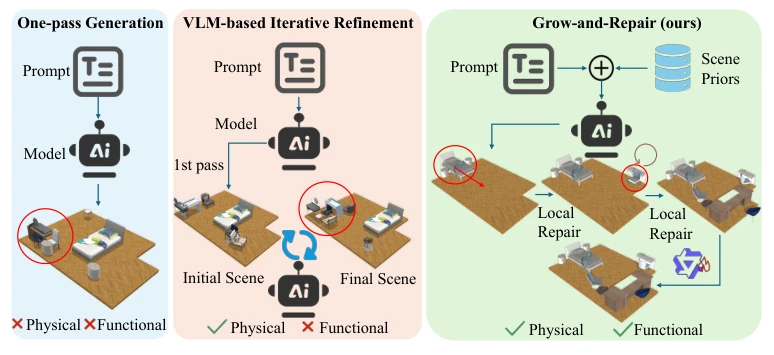
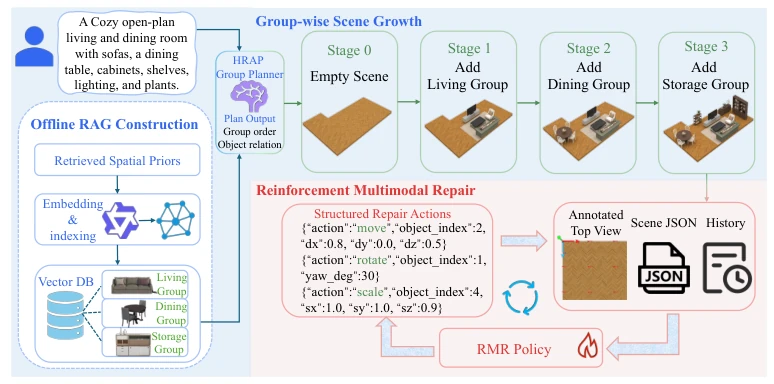
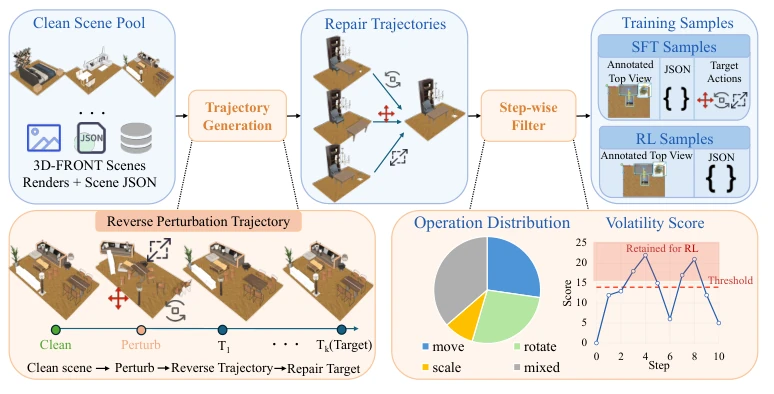
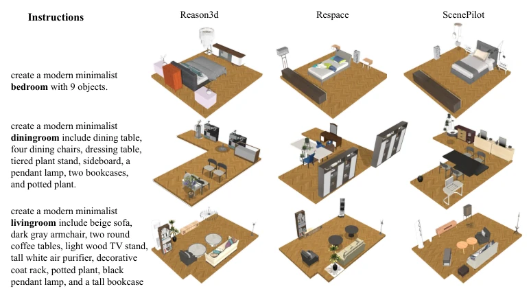
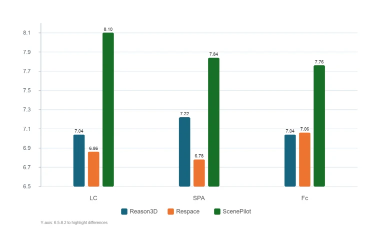
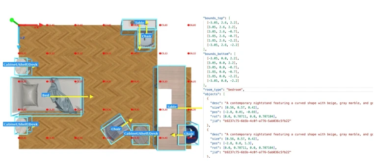
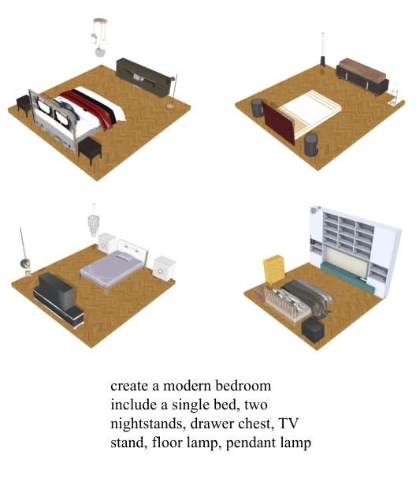

This "build while fixing" approach sounds quite attractive, much like programmers debugging while writing code, which is far better than refactoring the entire system at the end. ScenePilot indeed addresses the issue of physical conflicts prone to traditional "one-off" generation, transforming the generation process into a controllable incremental construction through hierarchical retrieval of priors and reinforcement learning repair strategies. However, do not get too excited too soon; its core dataset SceneReverse-17k generates "fake" errors by perturbing existing scenes, whereas layout errors in reality are often more complex, so whether this "simulated repair" can generalize to unseen scene structures remains a question mark. Furthermore, RAG retrieval relies on offline priors; if the prompt is too unusual and relevant priors cannot be retrieved, the system might "stupidly" apply old templates. In conclusion, it is a practical engineering improvement, but there is still a gap from true general-purpose intelligent scene generation, and it relies too heavily on the quality of the prior library.
研究动机Motivation
现有的文本驱动 3D 室内场景生成方法大多存在“过程盲区”。无论是 Reason-3D [15] 还是 ReSpace [29]，大多将生成视为从文本到最终布局的直接映射，或者依赖昂贵的后处理优化。这种“一生成完事”或“事后诸葛亮”的策略忽略了场景构建的路径依赖性：早期放置的一个错误家具（如床的位置不对）会连锁导致后续所有布局的物理冲突或功能失效。现有工作很少将中间状态视为规划、监督和修正的一等公民，导致生成的场景往往物理上无效（如穿模、越界）或功能上不可用（如家具遮挡通道）。因此，研究如何在一个生成过程中实时利用空间先验并修正中间状态，对于构建物理合理、功能连贯的 3D 环境至关重要。
Existing text-driven 3D indoor scene generation methods mostly suffer from "process blindness". Whether Reason-3D [15] or ReSpace [29], most treat generation as a direct mapping from text to final layout, or rely on expensive post-processing optimization. This "done-after-generation" or "hindsight" strategy ignores the path dependency of scene construction: an incorrectly placed piece of furniture early on (e.g., wrong bed position) will chain to cause physical conflicts or functional failure in all subsequent layouts. Existing work rarely treats intermediate states as first-class citizens of planning, supervision, and correction, resulting in generated scenes that are often physically invalid (e.g., clipping, out-of-bounds) or functionally unusable (e.g., furniture blocking passages). Therefore, researching how to utilize spatial priors in real-time within a generation process and correct intermediate states is crucial for building physically reasonable and functionally coherent 3D environments.

Figure 1: Comparison of scene generation paradigms. One-pass generation predicts a final layout directly and often leaves physical or functional errors unresolved. Post-hoc VLM refinement can cor- rect some visible violations, but it acts only after errors have already propagated and may still miss functional corrections. Our Grow-and-Repair framework retrieves scene priors before generation, grows the scene through functional groups with local repair after each insertion, and applies final global repair, producing scenes that are both physically plausible and functionally coherent.
ScenePilot proposes a retrieval-enhanced "Growth and Repair" framework, comprising three core stages. The first is Hierarchical Retrieval-Augmented Planning (HRAP), which retrieves room-level, group-level, and anchor-level layout priors from offline spatial memory, expanding user prompts into ordered plans containing functional zones to address the issue of insufficient prompt information. The second is group-based growth, where the base generator inserts functional groups (e.g., bedroom group, dining group) sequentially, rather than generating all objects at once. The most critical component is the Reinforcement Multimodal Repair (RMR) strategy, which observes rendered views and scene states after each insertion, predicts executable move, rotate, and scale actions for local correction, and performs global repair at the end. To train this strategy, the authors constructed the SceneReverse-17k dataset by perturbing the position, rotation, and scale of high-quality 3D-FRONT scenes to generate degraded states, and using inverse operations as repair trajectories, enabling the model to learn how to restore from error states to reasonable states.

Figure 2: Overview of ScenePilot. Given a user prompt, ScenePilot retrieves reusable layout priors from an offline spatial memory and uses them for prompt expansion and functional group planning. A base text-driven generator then inserts object groups sequentially. After each insertion, the Rein- forcement Multimodal Repair policy observes the intermediate scene state and predicts executable move–rotate–scale repair actions. After all groups are inserted, a final global repair stage coordi- nates the complete layout.

Figure 3: Construction pipeline of SceneReverse-17k. Starting from clean 3D-FRONT scenes with rendered views and scene JSONs, we synthesize degraded intermediate states using position, rotation, scale, and mixed perturbations. Step-wise filtering retains informative states with mean- ingful changes in physical validity or functional usability. The filtered reverse trajectories are then converted into SFT samples with annotated top-view images, scene JSONs, and target action se- quences, as well as RL samples for policy optimization.
Experiments were conducted on 100 scenes covering 5 room types, comparing baselines such as Reason-3D [15] and ReSpace [29]. Evaluation metrics include physical validity (OOB, MBL, PBL, VR) and semantic functional quality (VLM Judge and human evaluation). Results show that ScenePilot achieved a 59.5% reduction in PBL compared to ReSpace, the proportion of valid scenes increased to 0.86, and both VLM scores and human scores were the highest. Ablation studies indicate that removing HRAP retrieval or RMR repair leads to significant performance degradation, especially after removing RMR where functional integrity drops substantially. Human evaluation also confirms the consistency between automatic scoring and human perception, demonstrating the framework's effectiveness in reducing physical conflicts and improving layout rationality. Additionally, the expert GPT-5.2 repair agent serves as an upper bound reference, indicating that the current model still has room for optimization.

Figure 4: Qualitative comparison of generated indoor scenes under identical text instructions. Each row corresponds to one prompt (bedroom, dining room, and living room), and each column shows the result produced by a different method: Reason-3D, ReSpace, and ScenePilot.

Figure 6: Human evaluation results on layout correctness (LC), semantic plausibility (SPA), and functional completeness (FC). During the study, the three methods were anonymized as A, B, and C to avoid name-induced bias. Scores are averaged across evaluated samples.
其他图片Other Figures

Figure 5: Example of the JSON-based scene representation used in our framework. The scene file explicitly stores room geometry through top and bottom boundary vertices, together with an object list containing textual descriptions, sizes, positions, rotations, and asset identifiers.

Figure 7: Additional bedroom generation results for the prompt: create a modern bedroom include a single bed, two nightstands, drawer chest, TV stand, floor lamp, pendant lamp.